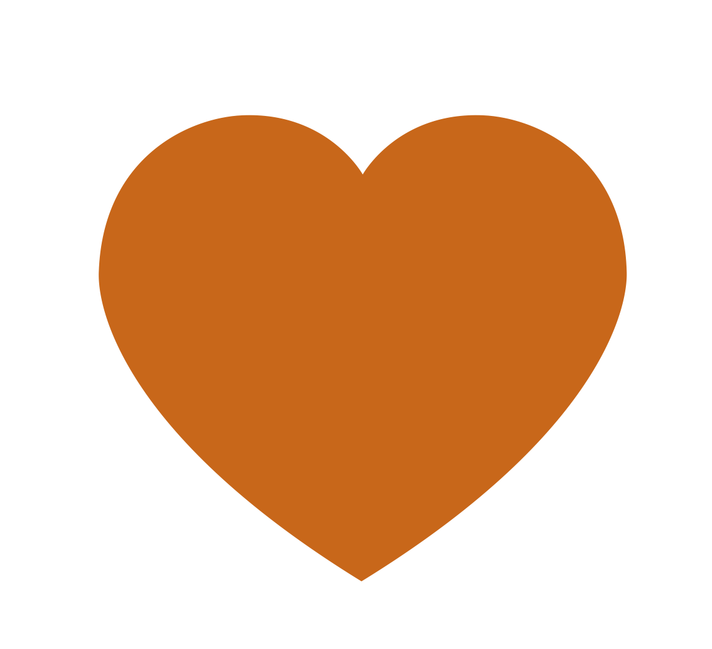
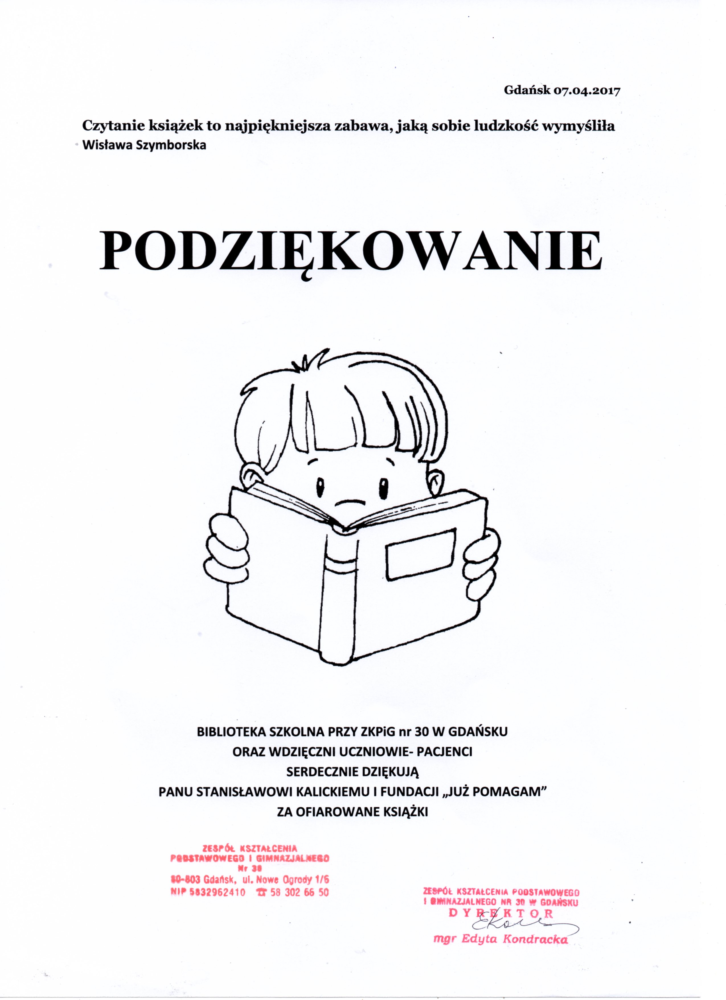
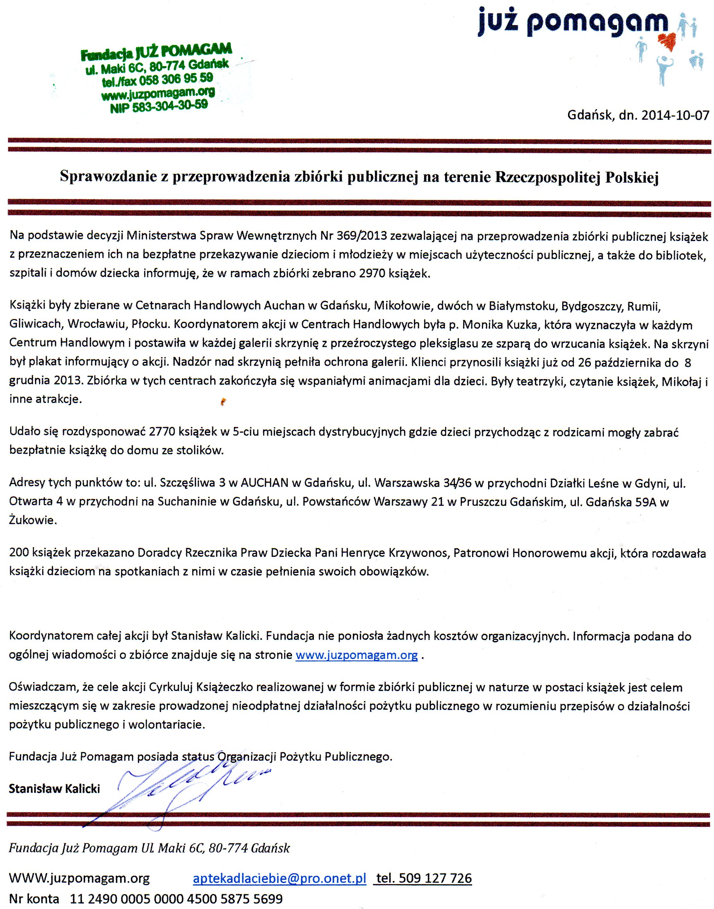
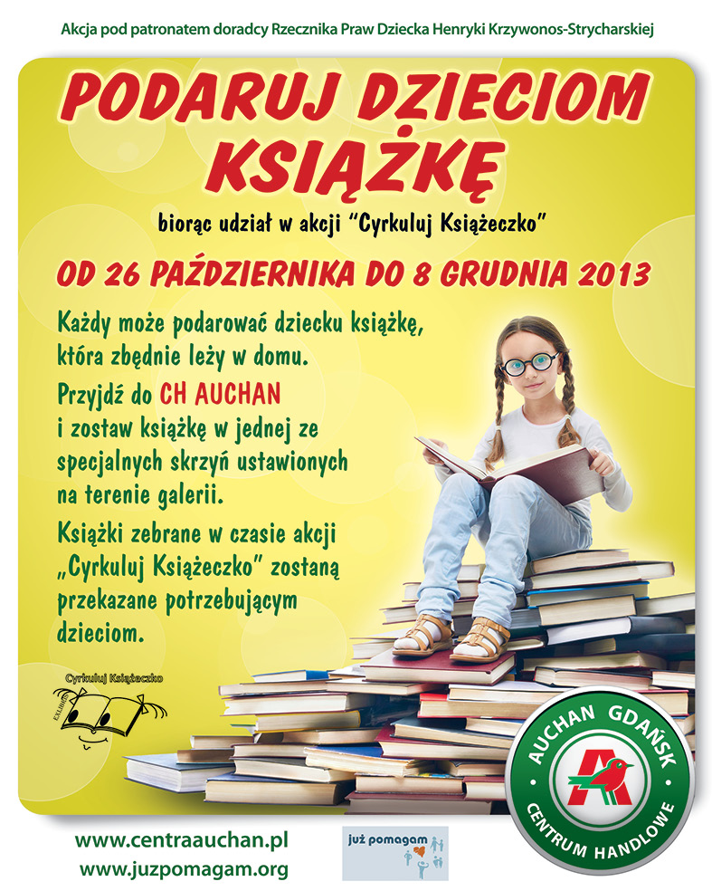
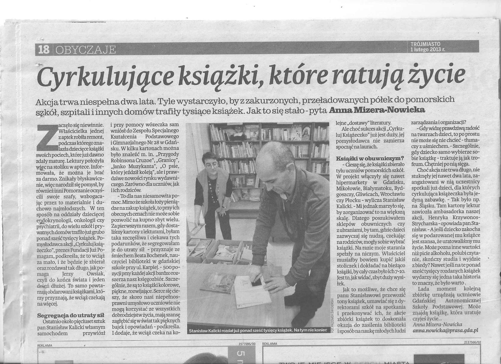
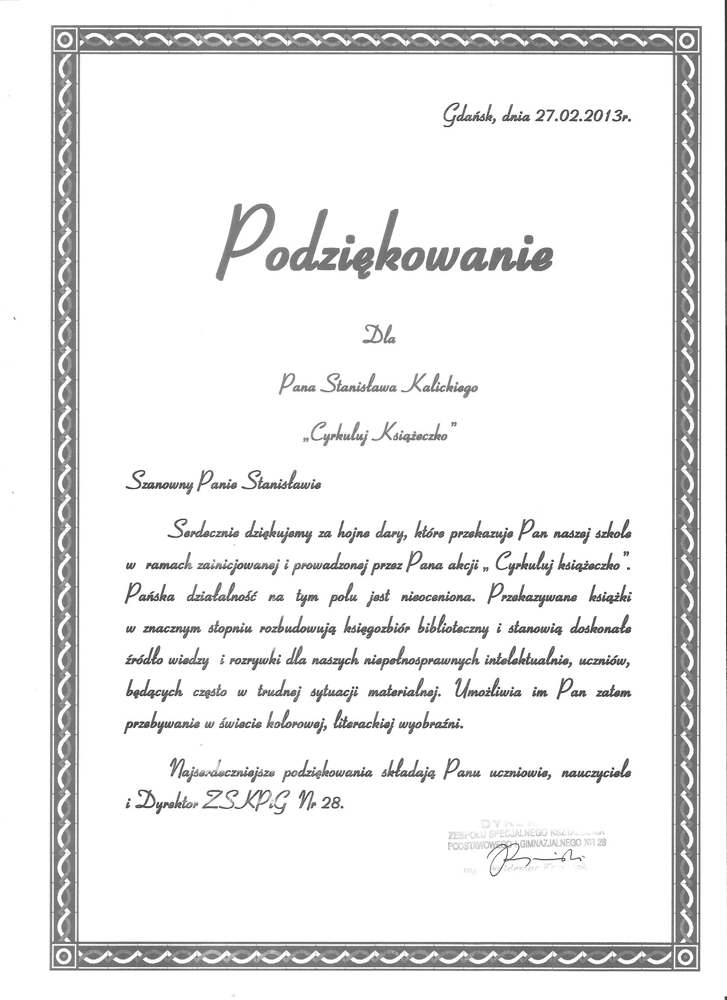
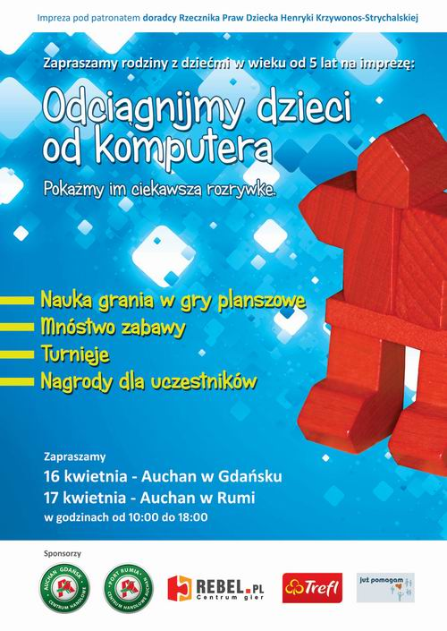

Aktualności
Staramy się na bieżąco informować Was o tym, jak działamy. W podstronie "Aktualności" znajdziecie wiadomości gdzie zbieramy książki, gdzie i kiedy będzie można oddać krew i w jakich jeszcze akcjach uczestniczymy. Każda z aktualności jest oflagowana, abyś mógł zawiesić oko na informacjach, które interesują Cię najbardziej. Jeśli nie poznałeś jeszcze naszych flagowych akcji, zapraszamy do zapoznania się w ich opisem.
- Symbol książki - Cyrkuluj książeczko

- Symbol kropelki - Akcje krwiodactwa

- Symbol serduszka - Inne działania fundacji
Przekaż nam swój 1%
Możesz wygodnie rozliczyć swój PIT ofiarując nam swój 1% podatku korzystając z możliwości projektu PITax.pl dla OPP Możesz rozliczyć swój PIT on line Darmowy Program PIT dostarcza firma PITax.pl Łatwe podatki.

51189 Waszych książek poszło dalej w świat
W roku już 2020 liczba książek zebranych powiększyła się o 7587 ksiązek. Daje to 51189 książek zebranych i prawie przekazanych dalej bo do przekazania zostało jeszcze ok. 1400 książek. Dziękuję Auchan i dobrm ludziom

Kolejne Szpitale otrzymały książki
Dzięki Państwa dobremu sercu w akcji Cyrkuluj Książeczko na terenie CH Auchan, Bielany Wrocławskie, Bydgoszcz, Gdańsk, Piaseczno, Płock, Kołbaskowo, Krasne, Rumia, Swadzim, Komorniki zostało zebrane 7387 ksiązek.Podarowane egzemplarze przekazywane są wybranym oddziałom dziecięcym szpitali, opiekuńczym domom dziecka, pogotowiu opiekuńczemu, szkołom. Akcję, jak co roku, objęła patronatem pani Henryka Krzywonos-Strycharska.W sumie zebrano już 43602 ksiązki. Dziękujemy :-)
Zbieramy książki w całej Polsce
Do końca roku na terenie CH Auchan, Bielany Wrocławskie, Bydgoszcz, Gdańsk, Piaseczno, Płock, Kołbaskowo, Krasne, Rumia, Swadzim, Komorniki będzie wystawiony specjalny pojemnik, do którego każdy może włożyć książki dla małych czytelników - bajki, opowiadania, wierszyki czy albumy.Akcja Cyrkuluj Książeczko jest ogólnopolską zbiórką książek dla dzieci. Podarowane egzemplarze przekazywane są wybranym oddziałom dziecięcym szpitali, opiekuńczym domom dziecka, pogotowiu opiekuńczemu, szkołom podstawowym, w tym szkołom specjalnym lub bezpośrednio dzieciom w placówkach publicznych. Akcję, jak co roku, objęła patronatem pani Henryka Krzywonos-Strycharska.
W tym roku także do akcji włączyły się PRZEDSZKOLE NR 34 IM. MARII KONOPNICKIEJ Gdańsk ul. Jagiellońska 12, Szkoła Podstawowa nr 23 im. Dzieci świata Gdańsk-Oliwa ul. Opacka 7, X LO w Gdańsku ul. Kościuszki 8b. Daje to w sumie 36215 książek.
Kolejne litry przelane
W akcji krwiodawstwa 3 lutego w Żukowie oddano 5,85 litra krwi. Serdecznie dziękujemy.
Te podziękowania są dla Was!
Tak cieszą się dzieciaki z Waszych książek, że wysyłają Wam podziękowania!

Bilans : 35465 książek
W sumie w akcji Cyrkuluj Książeczko wraz z ksiązkami z Zespołu Kształcenia Podstawowego i Gimnazjalnego nr 8 w Gdańsku Szkoła Podstawowa nr 89 Szyprów 3, 80-335 Gdańsk zebrano 35465 książek. Jeszcze zostało nam ich ok. 1100 do rozdania :-). Powędrowały do szkół, szpitali i bezpośrednio do dzieci. Do następnej akcji i tak zabraknie. Jesteście kochani!!! Dziękujemy w imieniu dzieci :-)
W akcji Cyrkuluj Książeczko 2016/2017 w Centrach Handlowych Auchan (Krasne, Mikołów, Katowice, Swadzim, Komorniki, Kołbaskowo, Sosnowiec, Piaseczno, Płock, Modlińska, Łomianki, Rumia, Gdańsk, Bielany, Hetmańska) zebrano 7982 książki. Serdecznie dzięujemy.
Dostajemy podziękowania za przekazane od Państwa książeczki. Serdecznie dziękujemy.
Kiedy organizujemy akcje w 2017
Informujemy o datach akcji krwiodawstwa w Żukowiew w 2017 roku
- 3 luty piątek godzinach 9.00-14.00
- 22 kwiecień sobota godzinach 9.00-14.00
- 8 lipca sobota godzinach 9.00-14.00
- 23 września sobota godzinach 9.00-14.00
- 2 grudnia sobota godzinach 9.00-14.00
Są to orientacyjne daty. Mogą ulec zmianie. Chcemy również zobaczyć czy krwiodawcom bardziej odpowiada piątek, sobota czy niedziela. Serdecznie dziękujemy.
W 2017 roku w Rumii akcja krwiodawstwa planowana jest na 4 marca sobota w godzinach 9,30 do 13,30
Serdecznie zapraszamy. Liczymy na frekwencję.
W akcji krwiodawstwa 10 września w Żukowie oddano 6,3 litra krwi. Serdecznie dziękujemy.
Podsumowanie roku 2016
Akcje krwiodawstwa organizowane dzięi Państwa zaangażowaniu poprzez fundację Już Pomagam w roku 2016 zaowocowały zebraniem 55,35 litrów krwi.
Cenrum Krwiodawstwa i Krwiolecznictwa w Gdańsku złożyło podziękowania na moje ręce i wpisano tam jedynie moje nazwisko, (musieli widocznie kogoś wpisać) jednak to Państwu należą się podzięowania i gratulacje.
Wszystkim osobom zaangażowanym w akcje i tym pomagającym i tym, którzy oddawali krew SERDECZNIE DZIĘKUJEMY !!! To Wasza praca i Wasza krew ratowała życie ludziom, których może spotkacie na ulicy, ale ani oni, ani Wy nie będziecie wiedzieć, że między innymi dzięki TOBIE oni żyją! W ich imieniu i własnym serdecznie dziękuję.
Stanisław Kalicki

Akcja pomocy pogorzelcom
Wszystkim Darczyńcom Serdecznie Dziękujemy w imieniu własnym i osób, którym pomogliście.
Szczególne podziękowania składam Komitetowi Decyzyjnemu Paniom
Ewie Ryngwelskiej, Annie Laskowskiej-Ejgierd oraz Małgorzacie Karpińskiej. Włożony ich wkład pracy, poświęcenia i serca jest nieoceniony.
Dziękuję Serdecznie
Kanclerz Fundacji Stanisław Kalicki
Na dzień dzisiejszy 04-10-2016 na konto wpłynęło dodatkowo 100zł więcej co dało 7824zł z czego przekazano przelewem bankowym na rzecz pogorzelców 7721,01zł na podstawie przedstawionych faktur zakupu zatwierdzonych przez Komitet Decyzyjny. Pozostała kwota 102,96zł została przeznaczona na działania statutowe fundacji.
W akcji pomocy pogorzelcom zostało zebranych 7724,00zł. W czasie zbiórki do puszek 6300,00 zł zostało zebranych, natomiast pozostała kwota 1424,00 zł była przesłana na konto przez darczyńców. Serdecznie wszsytkim dziękujemy. Dary zostaną rozdysponowane na podstawie wskazań Komitetu Decyzyjnego w najbliższym okresie.
Podsumowanie 2015 roku
Akcja Cyrkuluj Ksiązeczko była przeprowadzana w 12-tu centrach handlowych Auchan (Bielany, Częstochowa, Gdańsk, Hetmańska, Kołbaskowo, Komorniki, Łomianki, Modlińska, Piaseczno, Płock, Rumia, Swadzim) przyniosła 8379 ksiązek. Gratulacje. Część książek trafiła już do szpitali i została rozdana dzieciom, również Henryka Krzywonos-Strycharska rozdawała ksiązki dzieciom. W sumie dzięki dobrym ludziom udało się zebrać 27162 książki. Jeszcze są rozdawane i cieszą dzieci i dorosłych. Ksiązki dla dorosłych są dystyrbuowane szczególnie w szpitalach. Dziękujemy.
Zbiórka w C. h. Auchan Osowa
Sukces zbiórki książek w Centrum Handlowym Osowa 1329 książek, przybory szkolne oraz zestawy edukacyjne udało się zebrać podczas zbiórki dla potrzebujących dzieciaków w Centrum Handlowym Osowa. Zbiórka była prowadzona w ramach akcji Cyrkuluj Książeczko organizowanej przez Fundację Już Pomagam z patronem honorowym akcji Henryką Krzywonos-Strycharską. Zebrane rzeczy trafiły już do najbardziej potrzebujących. Ksiązki zostały przekazane do Szkoły podstawowej w Borczu, Szpitala GUMed na dziecięcy oddział endokrynologiczny, do biblioteki szpitala Dziecięcego na ul. Polanki w Gdańsku..
Zdrowie w Żukowie
Zapraszamy na najbliższą zbiórkę krwi w Żukowie, która odbędzie się 1 sierpnia 2015 w godzinach 9-13.
Zebraliśmy 17454 książek
Fundacja od początku działalności wraz ze szkołami i klientami Centrów Handlowych Auchan w Polsce oraz przyjaciółmi zebrała 17454 książek. Ostatnia zbiórka w CH Auchan w Polsce przyniosła 5454 ksiązki. Gratuluję i dziękuję klientom Auchan.
"Książki powinny trafić tam, gdzie najbardziej je doceniają, nie tkwić nie czytane, zakurzone na zapomnianych półkach" - Trylogia, Dziedzictwo, Księga Trzecia, Brisingr, rozdz. Dar złota, Christofer Paolinia
Zapraszam do udziału. Warto pomagać.
Szanowni Państwo,
Zachęcam do aktywnego włączenia się do prowadzonej w CH Osowa Gdańsk zbiórki książek dla dzieci. Zbieramy Książki i podręczniki. Zbiórkę prowadzimy w ramach akcji Cyrkuluj Książeczko. Zebrane książki i podręczniki trafią za sprawą Fundacji do najbardziej potrzebujących dzieci. Na terenie Galerii ustawiliśmy skrzynię, do której można przekazać zbędne już, a wciąż dobrej jakości książki i podręczniki. Zachęcam każdego z Państwa do sprawdzenia własnej domowej biblioteki i podzielenia się zbiorami z innymi. O akcji można powiedzieć znajomym i sąsiadom. Wierzę, że wspólnie do 6 września zbierzemy sporą ilość książek.
Zapraszam do udziału. Warto pomagać.
Znów zbieramy, zapraszamy
Zapraszamy na najbliższą zbiórkę krwi w Żukowie, która odbędzie się 1 sierpnia 2015 w godzinach 9-13.
Zapraszamy 11 czerwca do Żukowa
Zapraszamy na najbliższe akcje krwiodawstwa 11 czerwca w Żukowie godz. 10.00-14.00 ul. Gdańska 59A przy sieci 34. W akcji krwiodawstwa 11 czerwca w Żukowie oddano 9 litrów krwi. Serdecznie dziękujemy.
Szukamy wsparcia dla poszkodowanych rodzin pożaru na Morenie
Dnia 15.03.2016 w budynku przy ul. Zabłockiego 10 w Gdańsku Morenie wybuchł pożar, w wyniku którego jedno mieszkanie zostało całkowicie spalone, a kilka innych z powodu ognia i zalania również uległo ogromnemu zniszczeniu. Straty są tak wielkie, że szukamy wsparcia dla poszkodowanych rodzin. W ramach działalności Fundacji Już Pomagam zostanie przeprowadzona zbiórka publiczna na rzecz pogorzelców. Akcja będzie polegała na zbieraniu pieniędzy dla osób poszkodowanych w pożarze. Datki będą zbierane przez powołanych wolontariuszy oraz poprzez przelewy na konto Fundacji Już Pomagam nr konta BGZ PNB PARIBAS 80 2030 0045 1110 0000 0283 1550. Został powołany Komitet Decyzyjny, którego zadaniem będzie wyznaczanie i nadzór nad wolontariuszami zbierającymi pieniądze do puszek, decydowanie o przeznaczeniu zebranych pieniędzy oraz nadzór nad wpłatami i wypłatami na koncie fundacji, oraz przyjmowanie i realizowanie inicjatyw, pytań i skarg. W skład komitetu wchodzą: Ewa Ryngwelska Anna Laskowska-Ejgierd Małgorzata Karpińska.
Sprawozdanie akcji Cyrkuluj Książeczko 2014
W akcji klienci AUCHAN przynieśli 2970 książek. Zostały one rozdysponowane w 5-ciu miejscach dystrybucyjnych gdzie dzieci przychodząc z rodzicami mogły zabrać bezpłatnie książkę do domu ze stolików. Adresy tych punktów to: ul. Szczęśliwa 3 w AUCHAN w Gdańsku, ul. Warszawska 34/36 w przychodni Działki Leśne w Gdyni, ul. Otwarta 4 w przychodni na Suchaninie w Gdańsku, ul. Powstańców Warszawy 21 w Pruszczu Gdańskim, ul. Gdańska 59A w Żukowie. 200 książek przekazano Doradcy Rzecznika Praw Dziecka Pani Henryce Krzywonos, Patronowi Honorowemu akcji, która rozdawała książki dzieciom na spotkaniach z nimi w czasie pełnienia swoich obowiązków.

Prawie 10 litrów Krwi
W akcji 19 października przy CH AUCHAN w Rumii zebrano 9,95 litra krwi. Gratulujemy i dziękujemy
Najbliższa akcja 29 listopada w Żukowie ul. Gdańska 59A przy sieci 34
8,55 litra Krwi
W akcji 4 października w Żukowie ul. Gdańska 59A przy sieci 34 zebraliśmy 8,55L krwi. dziękujemy
Zapraszamy na najbliższe akcje 4 października w Żukowie ul. Gdańska 59A przy sieci 34
Dopisz się do Bazy Dawców Szpiku kostnego
Henryka Krzywonos osobiście przyjmowała zapisy do bazy dawców szpiku w akcji 15 i 16 marca w CH Auchan w Gdańsku i Rumii
Daj sobie upuścić
Zbiórki krwi w 2014 roku na które serdecznie zapraszamy:
Akcje krwiodawstwa w Żukowie godz. 10.00-14.00
- 22 marzec
- 17 maja
- 4 października
- 29 listopada
Akcje krwiodawstwa w Auchan w Gdańsku (sobota) i w Rumii (niedziela) godz. 10.00-14.00
- 15 i 16 marca
- 10 i 11 maja
- 12 i 13 lipca
- 19 października 9.30-13.30
2970 kolejnych książek do przekazania dzieciom
W akcji klienci AUCHAN przynieśli 2970 książek. Zostały one rozdysponowane w 5-ciu miejscach dystrybucyjnych gdzie dzieci przychodząc z rodzicami mogły zabrać bezpłatnie książkę do domu ze stolików. Adresy tych punktów to: ul. Szczęśliwa 3 w AUCHAN w Gdańsku, ul. Warszawska 34/36 w przychodni Działki Leśne w Gdyni, ul. Otwarta 4 w przychodni na Suchaninie w Gdańsku, ul. Powstańców Warszawy 21 w Pruszczu Gdańskim, ul. Gdańska 59A w Żukowie. 200 książek przekazano Doradcy Rzecznika Praw Dziecka Pani Henryce Krzywonos, Patronowi Honorowemu akcji, która rozdawała książki dzieciom na spotkaniach z nimi w czasie pełnienia swoich obowiązków.

Daj sobie upuścić
DAJ SOBIE COś UPUśCIĆ. Zbiórka krwi w Żukowie. 16 LISTOPADA 2013 sobota godz. 10-14 ul. Gdańska 59A na parkingu CH Byczkowski. ZAPRASZAMY SERDECZNIE :-)
Ratujmy Życie razem
Akcja w Auchan 7-8 września pozwoliła zebrać 13,5 litra krwi, a do międzynarodowej bazy dawców szpiku zapisało się 31 osób. :-) Czyli 31 osób dodatkowo może komuś uratować życie :-)
Sukces w Żukowie
W akcji przy Aptece Zdrowie w Żukowie 20 lipca 2013 zebrano 5,5 litra krwi.
Książki już dostały nowe życie!
Udało się rozdysponować 1623 książki do dwóch szpitali Zespół Kształcenia Podstawowego i Gimnazjalnego przy Wojewódzkim Szpitalu Psychiatrycznym w Gdańsku 598 książek, Pomorskie Centrum Traumatologii im. M. Kopernika w Gdańsku 220 książek, dwóch rodzin zastępczych z Białegostoku 320 książek, zaopatrzyliśmy bibliotekę w Zespole Specjalnego Kształcenia Podstawowego i Gimnazjalnego nr 28 w Gdańsku 485 książek 150 książek przekazano Doradcy Rzecznika Praw Dziecka Pani Henryce Krzywonos, Patronowi Honorowemu akcji, która rozdawała książki dzieciom na spotkaniach z nimi w czasie pełnienia swoich obowiązków. Oraz 1105 książek w 5-ciu miejscach dystrybucyjnych gdzie dzieci przychodząc z rodzicami mogły zabrać bezpłatnie książkę do domu ze stolików. Adresy tych punktów to: ul. Szczęśliwa 3 w AUCHAN w Gdańsku, ul. Warszawska 34/36 w przychodni Działki Leśne w Gdyni, ul. Otwarta 4 w przychodni na Suchaninie w Gdańsku, ul. Powstańców Warszawy 21 w Pruszczu Gdańskim, ul. Gdańska 59A w Żukowie. Koordynatorem całej akcji był Stanisław Kalicki. Fundacja nie poniosła żadnych kosztów organizacyjnych oprócz poniesienia opłaty za otrzymanie zezwolenia na akcję w wysokości 89 zł.
 
Sprawozdanie z przeprowadzenia zbiórki
Sprawozdanie z przeprowadzenia zbiórki publicznej na terenie Rzeczpospolitej Polskiej (wymagane przez Dz. U. Nr 199, poz. 1947 z pó. zm.) Fundacja Już Pomagam z siedzibą w Gdańsku ul. Maki 6C na podstawie decyzji Ministerstwa Spraw Wewnętrznych z dnia 31 sierpnia 2012 Nr 226/2012 zezwalającej na przeprowadzenia zbiórki publicznej książek z przeznaczeniem ich na bezpłatne przekazywanie dzieciom i młodzieży w miejscach użyteczności publicznej, a także do bibliotek, szpitali i domów dziecka informuję, że w ramach zbiórki zebrano 2878 książek. Książki były zbierane w Cetnarach Handlowych Auchan w Gdańsku, Mikołowie, dwóch w Białymstoku, Bydgoszczy, Rumii, Gliwicach, Wrocławiu, Płocku. Koordynatorem akcji w Centrach Handlowych była p. Monika Kuzka, która wyznaczyła w każdym Centrum Handlowym i postawiła w każdej galerii skrzynię z przeroczystego pleksiglasu ze szparą do wrzucania książek. Na skrzyni był plakat informujący o akcji. Nadzór nad skrzynią pełniła ochrona galerii. Klienci przynosili książki już od 8 grudnia 2012. Zbiórka w tych centrach zakończyła się wspaniałymi animacjami dla dzieci. Były teatrzyki, czytanie książek, Mikołaj i inne atrakcje.
Podsumowanie akcji Cyrkuluj Książeczko 2011/2012
Zebralimy w 2011/2012 - 5032 książek, już w 2012/2013 blisko 3438, z czego rozdysponowalimy wszystkie. :-) Głównie dzieci brały ze stolików w punkach użytecznoci publicznej, a także zaopatrzylimy bibliotekę w Zespole Szkół Specjalnych nr 28 w Gdańsku, Dziecięcy oddział endokrynologiczny oraz onkologiczny w GUMed w Gdańsku, Szpitala dziecięcego na ul. Polanki w Gdańsku, Rodzinny (Rodzinkowy) Dom Dziecka GFIS na Suchaninie, Pogotowia Opiekuńczo-Wychowawczego w Gdańsku.
Rozpoczynamy nową edycję, na ten rok szkolny 2013/2014. Wszystkich chętnych do udziału zapraszamy.
Szkoły, które zbierały książeczki:
- Ogólnokształcącej Szkole Muzycznej I i II stopnia im. Feliksa Nowowiejskiego w Gdańsku, ul. Gnilna 3
- Niepublicznej Szkole Podstawowej z Przedszkolem Nasza Szkoła ul. Konstantego Ciołkowskiego 10, w Gdańsku
- Szkole Podstawowej im. Obrońców Wybrzeża w Żukowie ul. Gdyńska 7
- Gimnazjum Jezuitów i Ogólnokształcącemu Liceum Jezuitów im. św. Stanisława Kostki w Gdyni ul. Tatrzańska 35
- Gdańskiej Autonomicznej Szkole Podstawowej w Gdańsku ul. Osiek 11/12
- Zespołowi Szkół w Kiełpinie - Gimnazjum im. Antoniego Arasmusa
- Szkole Podstawowej im. Partyzantów Gryfa Pomorskiego w Kiełpinie Gimnazjum nr 25 ul. T. Kościuszki 8 w Gdańsku
- Katolickie Szkoły Niepubliczne w Pruszczu Gdańskim ul. Wojska Polskiego 8, Pruszcz Gdański
- Gimnazjum nr 4 im. ks. kmdr. ppor. Władysława Miegonina ul. Okrzei 6, 81-228 Gdynia
Zbierano również w Centrach Handlowych Auchan w Gdańsku, Mikołowie, dwóch w Białymstoku, Bydgoszczy, Rumii,Gliwicach, Wrocławiu, Płocku. Zbiórka w tych centrach zakończyła się wspaniałymi animacjami dla dzieci. Były teatrzyki, czytanie książek, Mikołaj i inne atrakcje. Zebrano 2937 książek!!! Zebraliśmy - zebraliście (bo to wszyscy zbieramy) juz 8470 książek.
Serdecznie dziękujemy Radiu Gdańsk oraz Dziennikowi Bałtyckiemu za objęcie akcji "Cyrkuluj Książeczko" swoim patronatem !!!
Zapraszamy wszystkie dzieci, które chciały by wybrać sobie książeczkę do punktów, których adresy mozna znaleść w zakładce Aktualni uczestnicy Serdecznie zapraszamy Linki do informacji na innych stronach w internecie:
- Radio Gdańsk
- Polskie Radio
- Dziennik Bałtycki
- natablicy.pl
- blizejprzedszkola.pl
- C.H. Auchan
- onet.pl
- galeriehandlowe.pl
- bialystokonline.pl
- i inne
Depozyt elektroniczny, to już historia
Inicjatywa Ustawodawcza dotycząca zmniejszenia zużycia papieru w celach archiwizacyjnych, zawarta była w Pakiecie Szejnfelda. Obecnie weszła w życie i jest szeroka rozbudowana poza nami, choć ważny był też zalążek. Dotyczy przechowywania różnych danych prawnych w postaci elektronicznej
W tym roku także do akcji włączyły się PRZEDSZKOLE NR 34 IM. MARII KONOPNICKIEJ Gdańsk ul. Jagiellońska 12, Szkoła Podstawowa nr 23 im. Dzieci świata Gdańsk-Oliwa ul. Opacka 7, X LO w Gdańsku ul. Kościuszki 8b. Daje to w sumie 36215 książek.
Odciągnijmhy dziecko od komputera

Obywatelska Inicjatywa Ustawodawcza „Pracownik w ciąży”